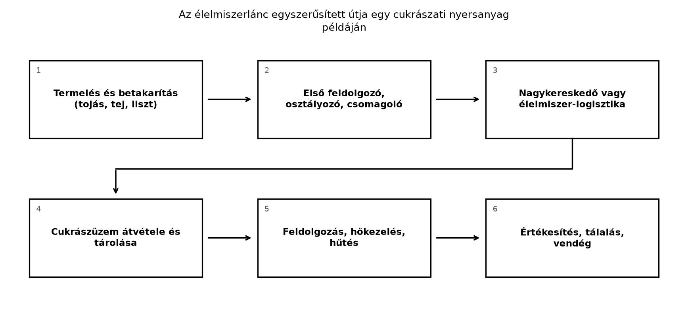

Reggel hat óra, a cukrászda átveszi a napi friss árut: tojást, tejszínt, vajat, lisztet. A szállítólevélen tételszám, szavatossági idő, hőmérséklet. Délután egy vendég allergiás reakciót jelez. Honnan tudjuk, melyik beszállításból származó alapanyaggal dolgoztunk? Ha nincs nyomon követhetőség, a probléma megismétlődhet, a vendég bizalma elvész, a hatóság pedig bírságolhat. Az élelmiszerlánc minden láncszemében jelen lévő adatok és szabályok együtt védik a fogyasztót, a dolgozót és a vállalkozást.
Az élelmiszer nem egyetlen pillanatban kerül az asztalra: hosszú utat jár be. Gondoljunk egy tojásra: takarmánytermelés, állattartó telep, tojásosztályozó, hűtött szállítás, cukrászüzem raktára, konyhai feldolgozás, hűtött tárolás, tálalás. Ha bárhol megszakad a hűtési lánc vagy a nyilvántartás, a későbbi vendéget érő kockázat növekszik.

A diagram nem egyetlen üzemet mutat be, hanem azt a láncot, amelynek a cukrászda csak egyik szereplője. A felelősség ettől még nem oszlik meg: a fogyasztó felé a cukrászda vállalkozója felel, a hibás szállítóval később ezt a felelősséget érvényesítheti.
Definíció. Élelmiszerlánc. Azoknak a lépéseknek és szereplőknek az összessége, amelyeken egy élelmiszer vagy élelmiszer-alapanyag a termeléstől a fogyasztóig áthalad. Ide tartozik a takarmánytermelés, az állattartás vagy növénytermesztés, a betakarítás, az elsődleges feldolgozás, a tárolás, a szállítás, az élelmiszer-előállítás, a vendéglátás és a fogyasztói tárolás is. A szakkifejezés: „a termőföldtől az asztalig” (from farm to fork).
Definíció. Élelmiszerbiztonság. Annak biztosítéka, hogy az élelmiszer a rendeltetésszerű felhasználás során nem okoz egészségkárosodást a fogyasztónak. Az élelmiszerbiztonság hiánya tehát akkor áll fenn, ha a termék biológiai, kémiai vagy fizikai veszélyt hordoz.
Definíció. Élelmiszer-minőség. Az élelmiszer azon jellemzőinek összessége, amelyek a fogyasztó elégedettségét meghatározzák: érzékszervi tulajdonságok (íz, illat, állag, szín), tápérték, eltarthatóság, csomagolás, kényelem, megbízhatóság. A minőségi hiba nem feltétlenül élelmiszerbiztonsági kockázat: a túl sötétre sült piskóta nem betegít meg, de minőségi hibának számít.
Definíció. Élelmiszer-higiénia. Azok a feltételek és intézkedések, amelyek az élelmiszer biztonságos és fogyasztható voltának megőrzését szolgálják a lánc bármely pontján. A higiénia a biztonság egyik eszköze, nem azonos a minőséggel.
Összefüggés. A fenti három fogalom hierarchiája: az élelmiszer-higiénia az élelmiszerbiztonság eszköze; az élelmiszerbiztonság a minőség egyik – de nem elégséges – eleme; a minőség tágabb, a fogyasztói elvárásokat is magában foglalja. A vállalkozónak mindháromért felelőssége van, de az élelmiszerbiztonság a jogilag leghangsúlyosabb.
Példa. Egy tejszínes krémes sütemény, amelyet a szabályok szerint hűtötten tárolnak, és a tejszínt pasztőrözött termékből készítették, élelmiszerbiztonságilag megfelelő lehet. Ha viszont a tészta alulsütött, az már minőségi hiba; ha a krémben romlott tejszínből származó kórokozó van, az élelmiszerbiztonsági hiba.
Definíció. Nyomon követhetőség. Annak képessége, hogy egy élelmiszert, takarmányt, élelmiszer-alapanyagot vagy állatot a termelés, feldolgozás és forgalmazás minden szakaszában azonosítani és nyomon követni lehessen. A gyakorlatban a cukrászüzemben azt jelenti, hogy tudnunk kell, honnan érkezett egy nyersanyag, melyik tételből származik, mennyit vettek át, hova került belőle, és melyik késztermékbe dolgoztuk be (ez utóbbi, az üzemen belüli követés jó gyakorlat és a saját HACCP-rendszer része, lásd az alábbi Jogszabály-bekezdést).
Jogszabály. Az általános élelmiszerjogi rendelet (178/2002/EK) rögzíti a nyomon követhetőség követelményét, a vállalkozói felelősséget és a visszahívási kötelezettséget. A hivatkozott cikkek és részletes előírások a mindenkori szöveg szerint ellenőrizendők – (ellenőrizendő: 178/2002/EK rendelet nyomonkövetési cikkei, visszahívási és bejelentési kötelezettségei). A gyakorlati elv: egy lépés előre, egy lépés hátra. A vállalkozónak képesnek kell lennie megnevezni a szállítóját (egy lépés hátra) és a közvetlen vevőjét (egy lépés előre), valamint a tételazonosítókat. A 178/2002/EK rendelet tehát a szállító és a közvetlen vevő azonosítását írja elő (ellenőrizendő: a rendelet nyomonkövetési cikke). Azt, hogy egy tétel az üzemen belül melyik késztermékbe került (belső nyomon követés), a jó gyakorlat és a saját HACCP-rendszer írja elő; e nélkül a visszahívás csak a teljes termelésre terjedhet ki.
Példa. A cukrászda átvesz 10 kg vajat. A szállítólevél tartalmazza: szállító neve, termék neve, tételszám (pl. LOT HU 2025 04 12), mennyiség, szavatossági idő, átvételi hőmérséklet. A cukrászda naplózza a tételszámot, majd a termelési lapon rögzíti, hogy a vaj melyik tételből melyik tésztába került. Ha a vajjal kapcsolatban később visszahívás történik, a tételszám alapján azonosíthatók az érintett termékek.
Megjegyzés. A nyomon követhetőség nemcsak dokumentumgyűjtés, hanem a rendszer működtetése is: a tételszámnak követhetően át kell vonulnia a raktári bevételezésen, a kiadáson és a termelési lapon.
Definíció. Veszély (hazard). Az élelmiszerben vagy az élelmiszerkörnyezetben jelen lévő olyan tényező, amely potenciálisan egészségkárosodást okozhat. A cukrászatban négy fő veszélytípust különböztetünk meg:
| Veszélytípus | Példák a cukrászatban | Megelőzési példák |
|---|---|---|
| Biológiai | Salmonella tojáshéjon, Staphylococcus aureus bőrön, Listeria a hűtött késztermékben, penészgombák gyümölcsön | hőkezelés, hűtés, személyi higiénia, alapanyag-vizsgálat |
| Kémiai | tisztítószer-maradvány, nem élelmiszer-ipari színezék, patkányméreg, akrilamid túlsütésből | vegyszerek elkülönítése, megengedett adalékok, hőfok-idő betartás |
| Fizikai | üvegszilánk, fémforgács, hajszál, csomagolódarab, dióhéj | eszköz-ellenőrzés, szűrés, fémdetektor, védőfelszerelés |
| Allergén | glutén, tojás, tej, diófélék, földimogyoró, szezám | allergénkezelés, jelölés, keresztszennyeződés-megelőzés |
Az allergén veszély valójában részben biológiai-kémiai mechanizmusú, de a gyakorlatban külön csoportként kezeljük, mert kis mennyiség is súlyos reakciót válthat ki, és a tájékoztatás a legfontosabb megelőzési eszköz.
Definíció. Kockázat (risk). Annak valószínűsége és súlyossága, hogy a veszély ténylegesen káros hatást okoz. Nem minden veszély jár azonos kockázattal: a nyers tojás szobahőmérsékleten tartva nagyobb kockázat, mint ugyanaz a tojás hűtve, gyorsan feldolgozva és átsütve. A HACCP-rendszer a jelentős kockázatokat keresi és szabályozza.
Továbbvitt eredmény. Ezt a négy veszélytípust a Mikroorganizmusok: csoportok, életfeltételek és szaporodás (biológiai), a Kémiai szennyezők és technológiai eredetű szennyezők (kémiai), és a Allergének és intoleranciák: tájékoztatás és allergénkezelés a cukrászüzemben (allergén) alfejezetek fejtik ki részletesen. A HACCP-rendszerben ugyanezeket a kockázati csoportokat elemezzük majd a A HACCP-rendszer alapelvei alfejezetben.
Vállalkozói felelősség. Az élelmiszer-vállalkozó (így a cukrászda tulajdonosa vagy üzletvezetője) elsődlegesen felel azért, hogy az élelmiszerbiztonság és a fogyasztói tájékoztatás követelményei teljesüljenek. Ez nemcsak jogszabályi, hanem szakmai és erkölcsi felelősség is. A vállalkozó köteles ismerni a nyersanyagok kockázatait, megfelelő technológiát választani, és a dolgozókat oktatni.
Hatósági felügyelet. Magyarországon az élelmiszerlánc-biztonság hatósági felügyeletét a NÉBIH és a kormányhivatalok élelmiszerlánc-biztonsági szervei látják el (ellenőrizendő: aktuális szervezeti rend). A hatóság ellenőrzi a létesítményt, a technológiát, az alapanyagokat, a jelölést, a dolgozók képzettségét és a dokumentációt. Jogsértés esetén figyelmeztethet, korlátozhat, bírságot szabhat ki, súlyos esetben leállíthatja a tevékenységet.
Fogyasztói szerep. A fogyasztó felelőssége, hogy a terméket a jelölés szerint tárolja, a minőségmegőrzési vagy fogyaszthatósági időn belül elfogyassza, és érzékenységét (allergia, intolerancia) jelezze. A fogyasztó panasza fontos jelzés a vállalkozónak: nemcsak egyedi ügy, hanem a rendszer hibájának tünete is lehet.
Szabály. A felelősségi lánc nem szakad meg: ha a cukrászda hibás nyersanyagot vett át, a hibáért elsősorban ő felel a fogyasztó felé; később perelheti a szállítót, de a vendéget nem utasíthatja el azzal, hogy „a beszállító hibázott”. A nyomon követhetőség éppen azért fontos, hogy ilyenkor a valódi ok feltárható legyen.
Tilos. Nem dokumentált, gyanús eredetű nyersanyagot átvenni és feldolgozni. Ha a szállítólevél hiányos, vagy a termék bizonytalan forrásból származik, az árut el kell különíteni, és a visszautasítás a biztonságos választás.
Példa. A cukrászda átvesz 5 000 g étcsokoládét, tételszám L-1234. A raktári naplóba bejegyzi: érkezés dátuma, szállító, mennyiség, tételszám, lejárati idő. A termelés során ebből a tételből 2 500 g-ot használnak fel a Dobos torta csokoládémázához, 2 500 g-ot a bonbontöltelékhez. A termelési lapokra rávezetik a tételszámot. Ha a gyártó visszahívást rendel el a L-1234 tételre, a cukrászda percek alatt azonosítja, mely késztermékek érintettek, és visszahívja vagy visszatartja őket. Dokumentum: tételazonosító nyilvántartás, termelési lap, kiadási bizonylat.
A rajzolt (kitalált) vajcímkén megkeresed a terméknevet (1), a tételszámot (2), a minőségmegőrzési vagy fogyaszthatósági időt (3), a tárolási hőmérsékletet (4), a nettó tömeget (5) és a szállítót (6). A tételszám a szállítólevélen is szerepel, és innen kerül a termelési lap „felhasznált tétel” oszlopába (7) – így követhető a fenti étcsokoládé-példa L-1234 tétele is a Dobos tortáig és a bonbonig. A „Minőségét megőrzi” dátumot a tartósabb, a „Fogyasztható” dátumot a romlandó termékeken találod.
Gyakorlat. Készítsünk egyszerű átvételi ellenőrzőlistát: szállító neve, jármű hőmérséklete, termék neve, mennyiség, tételszám, csomagolás sértetlensége, minőségmegőrzési vagy fogyaszthatósági idő, átvevő aláírása. A dokumentumok nélkül átvett alapanyagot ne dolgozzuk be.
Ebben a fogalmi alfejezetben a minőségellenőrzés nem késztermékre, hanem a fogalmak alkalmazására vonatkozik. A tanuló akkor ellenőrzi a saját tudását, ha meg tudja nevezni a négy veszélytípust, mindegyikre hozni tud példát, és el tudja magyarázni a nyomon követhetőséget egy konkrét alapanyag példáján. Írásbeli ellenőrzőlista: a beszállítói dokumentumok megléte, a tételszámok rögzítése, a termelési lapok kitöltése, a raktári elkülönítés szabályai. A vállalkozás belső ellenőrzésekor ezek együttesen adják a nyomonkövetési rendszer „metszetét”.
Egy esküvői torta elkészítéséhez a cukrászda friss tojást, tejszínt és fagyasztott málnasűrítményt használ. A torta tetejére nem jelölt diódarabok kerülnek. A vendég, aki dióallergiás, rosszul lesz. A kivizsgálás során a hatóság kérdezi: mikor érkezett a dió, milyen tételszám, hol tárolták, miért nem szerepelt a jelölésen? A kivizsgálás során a dolgozók kikérdezéséből derült ki, hogy a dió egy müzlikeverékből származott, amelyet egy dolgozó önkényesen, a termelési lapra fel nem vezetve használt. A naplóban ennek nem volt nyoma – éppen ez a hiba. Tanulság: a dokumentált rendszer hiánya pontosan oda vezetett, hogy az allergén-információ elveszett a láncban. A helyesbítés: allergénmátrix bevezetése, minden rendeléshez jelölési kártya, dolgozói oktatás.
1. feladat (A)
Három-öt mondatban magyarázd el, mi a különbség az élelmiszerbiztonság
és az élelmiszer-minőség között, és adj példát mindkettőre.
2. feladat (A)
Sorold fel a négy veszélytípust, és írj mindegyikhez egy-egy cukrászati
példát.
3. feladat (B)
Rajzolj folyamatábrát a tojás útjáról a termelőtől a vendégig, és jelöld
be a lehetséges higiéniai kockázatokat legalább három ponton.
(Használhatod az alfejezet flow ábrájának logikáját.)
4. feladat (B)
A cukrászda átvesz 12 kg vajat. A szállítólevél hiányos, nincs rajta
tételszám. Írd le, mit teszel lépésenként, és milyen kockázatokat
vállalsz, ha mégis betárolásra kerül.
5. feladat (C)
Egy vendég panaszt tesz, hogy a süteményben üvegdarabot talált. Írd le a
hibakeresés lépéseit: mit ellenőrzöl, kit kérdezel meg, milyen
dokumentumokat nézel meg, és milyen helyesbítő tevékenységet
javasolsz.
6. feladat (D)
Gyakorlat: Készíts egy egyszerű nyomonkövetési naplótáblázatot egy
általad választott nyersanyaghoz (pl. tejszín, liszt, csokoládé), amely
legalább a következőket tartalmazza: szállító, tételszám, mennyiség,
átvételi dátum, felhasználás helye, felhasználás dátuma, kiadó aláírása.
Töltsd ki fiktív adatokkal, és magyarázd el, hogyan keresnéd vissza a
terméket visszahívás esetén.
Önellenőrzés – válaszok
1. feladat (A) megoldása
Az élelmiszerbiztonság a fogyasztó egészségének védelméről szól: a
termék nem tartalmazhat kórokozót, kémiai szennyezőt, fizikai
idegentestet megengedett határ felett. Az élelmiszer-minőség a
fogyasztói elégedettséghez kapcsolódik: íz, állag, megjelenés,
csomagolás. Például egy friss, jól sikerült krémes lehet kiváló
minőségű, de ha romlott tejszínből készült, élelmiszerbiztonságilag
hibás. Fordítva: egy tökéletesen biztonságos, de száraz, repedt piskóta
minőségi hibás.
2. feladat (A) megoldása
Biológiai: Salmonella a tojáshéjon. Kémiai: tisztítószer-maradvány a
munkalapon, ami a tésztába kerül. Fizikai: üvegszilánk a
lekvárosüvegből. Allergén: dió a csokoládétortában, amelyet nem
jelöltek.
3. feladat (B) megoldása
A flow ábra a következő lépéseket tartalmazza: termelés →
tojásosztályozó → szállítás hűtve → cukrászüzem átvétele → tárolás hűtve
→ feldolgozás (feltörés) → hőkezelés (krém főzése) → késztermék hűtése →
tálalás. Lehetséges kockázatok: tojás héján külső szennyeződés
(biológiai), szállítás hőmérséklet-ingadozása (biológiai), feltöréskor
héjdarab a masszába (fizikai), nem jelölt tojásallergén (allergén), nem
megfelelő hőkezelés (biológiai). A táblázatban a lépésekhez rendelt
kockázatok jelzik, hol kell ellenőrzést végezni.
4. feladat (B) megoldása
Lépések: 1. A szállítólevél hiányosságát rögzítem az átvételi naplóban.
2. A vajat elkülönítve, „azonosításra vár” jelöléssel betárolom, vagy
visszautasítom. 3. Felveszem a kapcsolatot a beszállítóval a tételszám
utólagos megadása érdekében. 4. Ha a tételszám nem pótolható, az árut
zárolom, és a minőségbiztosítási felelőssel egyeztetek. Ha mégis
betárolom dokumentáció nélkül, nem tudom azonosítani a tételt
visszahívás esetén, és a hatósági ellenőrzésen hiányosságot találhatnak.
Ez a jogszabályi nyomonkövetési (szállító–vevő) azonosítási
kötelezettség megsértése lehet (ellenőrizendő: 178/2002/EK), a belső
nyomon követés hiánya pedig a visszahívhatóságot ellehetetleníti;
kockázata van bírságnak és félreinformálásnak.
5. feladat (C) megoldása
Először a panaszt rögzítem, a terméket lefoglalom, a vendég adatait
felveszem. Megnézem a termelési lapot: melyik alapanyag-tételből
készült, ki gyártotta, melyik gépet használták. Megkérdezem a
dolgozókat, hol nyithattak ki üvegedényt, volt-e törés, sérült-e eszköz.
Ellenőrzöm az alapanyagok csomagolását, a lekvárosüvegek állapotát.
Megnézem a nyomonkövetési azonosítókat. Helyesbítés: a tételt
visszahívom, a gyártósort leállítom, az érintett eszközöket takarítom,
szükség esetén fém- és üvegeltávolító szűrést vezetek be, oktatást
tartok. A hatóságot indokolt esetben be kell jelenteni (ellenőrizendő:
bejelentési rend).
6. feladat (D) megoldása
A naplótáblázat például:
| Szállító | Tételszám | Mennyiség (g) | Átvétel dátuma | Felhasználás helye | Felhasználás dátuma | Kiadó aláírása |
|---|---|---|---|---|---|---|
| Tejszín Kft. | LOT 2025-04-21 | 5 000 | 2025-04-21 | Málnás pohárkrém | 2025-04-21 | K. Zs. |
Visszahívás esetén a tételszám alapján megkeresem a naplóban az érintett terméket, megnézem a termelési lapon a pontos felhasználási helyet, azonosítom a késztermék tételt, és a vevőt is. A napló és a termelési lap együtt biztosítja a teljes láncot.
Az élelmiszerlánc a termeléstől a fogyasztóig tartó lépések összessége. Az élelmiszerbiztonság azt jelenti, hogy a termék nem okoz egészségkárosodást; az élelmiszer-minőség ennél tágabb, a fogyasztói elégedettséghez kötődik; az élelmiszer-higiénia a biztonság eszköze. A vállalkozó elsődlegesen felel, a hatóság felügyel, a fogyasztó jelölést követő magatartással védi saját egészségét. Nyomon követhetőség: minden tételt azonosítani kell, és a beszállítótól a felhasználásig dokumentálni; az elv „egy lépés előre, egy lépés hátra”. Négy veszélytípus: biológiai, kémiai, fizikai, allergén. A kockázat a veszély bekövetkezésének valószínűsége és súlyossága. A HACCP a jelentős kockázatokra koncentrál. A hibás tételt vissza kell tartani vagy vissza kell hívni; gyanús, dokumentálatlan árut nem szabad feldolgozni.
A szöveg hivatkozik a 178/2002/EK rendeletre (általános élelmiszerjog), valamint a NÉBIH és a kormányhivatalok szerepére. Ellenőrizendő: a rendelet nyomonkövetési cikkei, a visszahívási és bejelentési kötelezettségek pontos előírásai, a hatósági szervezet aktuális megnevezése. Szintén ellenőrizendő a panaszok bejelentésére vonatkozó eljárásrend. A táblázatban szereplő példák általános szakmai ismeretekből származnak, nem jogszabályi idézetek. Tápérték- vagy határérték-szám ebben az alfejezetben nem szerepelt, ezért nem igényel forrás-ellenőrzést.